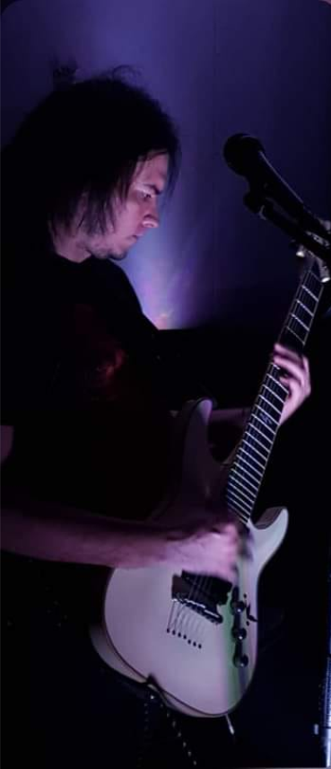
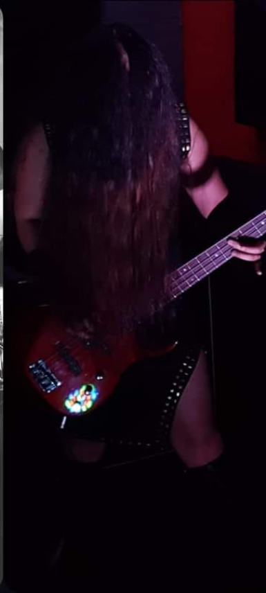

<!DOCTYPE html>
<html lang="en">

<head>
    <meta charset="UTF-8">
    <meta name="viewport" content="width=device-width, initial-scale=1, shrink-to-fit=no">
    <meta name="author-name" content="EduardoJiménez">
    <meta name="author-email" content="edujim@outlook.com">
    <meta name="author-profile" content="https://">
    <meta name="template-name" content="Radio Rock SV">
    <meta name="template-type" content="FM Radio Station">
    <meta name="template-title" content="Radio Rock SV - FM Radio Station Bootstrap HTML Template">
    <meta name="keywords" content="edu, fm, bootstrap, html, template, mp3, player, radio station, responsive, schedule, shoutcast, online radio station template, radio station html template, radio station website template, mp3 player">
    <title>Radio Rock SV|El Salvador C.A.</title>
    <link rel="icon" href="img/logo.png">
    <link rel="stylesheet" href="font/flaticon/flaticon.css">
    <link rel="stylesheet" href="https://cdnjs.cloudflare.com/ajax/libs/font-awesome/5.14.0/css/all.min.css">
    <link rel="stylesheet" href="css\vendor\slick.css">
    <link rel="stylesheet" href="css\vendor\bootstrap.min.css">
    <link rel="stylesheet" href="css\custom\main.css">
    <link rel="stylesheet" href="css\custom\about.css">
    <link rel="stylesheet" href="css\vendor\venobox.min.css">
    <link rel="stylesheet" href="css\custom\main.css">
    <link rel="stylesheet" href="css\custom\index.css">
    <link rel="stylesheet" href="css\custom\about.css">
</head>

<body>

    <div class="back2top-btn"><a href="#"><i class="fas fa-long-arrow-alt-up"></i></a></div>

    <header class="header-part">
        <div class="header-bg">
            <div class="container">
                <div class="row">
                    <div class="col-lg-12">
                        <center>
                            <a class="header-logo" href="#"></a>
                        </center>
                    </div>
                </div>
            </div>
        </div>
    </header>
    <nav class="navbar-part">
        <div class="navbar-bg">
            <div class="container">
                <div class="navbar-content">
                    <a class="navbar-logo" href="#"></a><button class="navbar-toggle" type="button"><i class="fas fa-bars"></i></button>
                    <div class="navbar-overlay">
                        <div class="navbar-slide">
                            <div class="slide-head">
                                <a href="#"></a><button class="cencel"><i
                                        class="fas fa-times"></i></button>
                            </div>
                            <ul class="navbar-list">
                                <li class="navbar-player">
                                    <div class="player"><button class="player-btn" id="play-pause-button"><i
                                                class="fas fa-play"></i></button></div>
                                </li>
                                <li class="navbar-item"><a class="navbar-link" href="https://radiorocksv.github.io"><span><i
                                                class="fas fa-headphones-alt"></i>Inicio</span></a></li>
                                <li class="navbar-item navbar-dropdown"><a class="navbar-link" href="#"><span><i
                                                class="fas fa-headphones-alt"></i>Bandas Salvadoreñas</span><small
                                            class="fas fa-chevron-down"></small></a>
                                    <ul class="dropdown-list">
                                        <li><a class="dropdown-link" href="#">Maldek</a></li>
                                        <li><a class="dropdown-link" href="#">Kraner</a></li>
                                        <li><a class="dropdown-link" href="#">Renegador</a></li>
                                        <li><a class="dropdown-link" href="#">Elegy Of Myself</a></li>
                                        <li><a class="dropdown-link" href="#">Kronos</a></li>
                                        <li><a class="dropdown-link" href="#">Astaroth</a></li>
                                        <li><a class="dropdown-link" href="Eutopia/indexEutopia.html">Eutopia</a></li>
                                        <li><a class="dropdown-link" href="FatalInfection/indexFatalInfection.html">Fatal Infection</a>
                                        </li>
                                    </ul>
                                </li>
                                <li class="navbar-item navbar-dropdown"><a class="navbar-link" href="#"><span><i
                                                class="fas fa-headphones-alt"></i>Redes</span><small
                                            class="fas fa-chevron-down"></small></a>
                                    <ul class="dropdown-list">
                                        <li><a class="dropdown-link" href="https://www.tiktok.com/@radiorocksv">Tik
                                                Tok</a></li>
                                        <li><a class="dropdown-link" href="https://www.instagram.com/radiorocksv">Instagram</a></li>
                                        <li><a class="dropdown-link" href="https://www.youtube.com/c/RadioRockSV">Youtube</a></li>
                                        <li><a class="dropdown-link" href="https://www.facebook.com/radiorocksv">Facebook</a></li>
                                    </ul>
                                </li>
                                <li class="navbar-item"><a class="navbar-link" href="https://chat.whatsapp.com/Ekqh4B0AwDZ8hsaM7mWPBv"><span><i class="fas fa-headphones-alt"></i>Grupo WhatsApp</span></a></li>
                            </ul>
                        </div>
                    </div>
                </div>
            </div>
        </div>
    </nav>

    <div class="bottom-player">
        <div class="player"><button class="player-btn" id="play-pause-button2"><i class="fas fa-play"></i></button>
        </div>
    </div>

    <main class="banner-slider">
        <section class="banner-1">
            <div class="banner-oly">
                <div class="container">
                    <div class="row">
                        <div class="col-lg-12">
                            <div class="banner-content">
                                <h1>Radio Rock Sv</h1>
                                <p>La Estación del Rock y Metal en El Salvador</p><a href="https://zeno.fm/radio/radiorocksv/" class="btn btn-inline"><i
                                        class="fas fa-eye"></i><span>Para Iphone</span></a>
                            </div>
                        </div>
                    </div>
                </div>
            </div>
        </section>
        <section class="banner-2">
            <div class="banner-oly">
                <div class="container">
                    <div class="row">
                        <div class="col-lg-12">
                            <div class="banner-content">
                                <h1>Radio Rock SV</h1>
                                <p>Visita Nuestro Canal en YouTube</p><a href="https://www.youtube.com/c/RadioRockSV" class="btn btn-inline"><i class="fas fa-eye"></i><span>Live en Youtube</span></a>
                            </div>
                        </div>
                    </div>
                </div>
            </div>
        </section>
        <section class="banner-3">
            <div class="banner-oly">
                <div class="container">
                    <div class="row">
                        <div class="col-lg-12">
                            <div class="banner-content">
                                <h1>Radio Rock SV</h1>
                                <p>Disfruta nuestros cortos</p><a href="https://www.tiktok.com/@radiorocksv" class="btn btn-inline"><i class="fas fa-eye"></i><span>Live en Tik Tok</span></a>
                            </div>
                        </div>
                    </div>
                </div>
            </div>
        </section>
    </main>

    <section class="section blog-part">
        <div class="container">
            <div class="row">
                <div class="col-lg-12">
                    <div class="section-heading">
                        <h2>Eutopia</h2>
                    </div>
                </div>
            </div>
            <div class="row">
                <div class="col-lg-12">
                    <div class="blog-slider slider-arrow">
                        <div class="blog-card">
                            <div class="blog-overlay">
                                <p></p>
                                <h3>
                                    <a href="#"></a>
                                </h3>
                                <a class="btn btn-outline" href="#"></a>
                            </div>
                        </div>
                        <div class="blog-card">
                            <div class="blog-overlay">
                                <p></p>
                                <h3>
                                    <a href="#"></a>
                                </h3>
                                <a class="btn btn-outline" href="#"></a>
                            </div>
                        </div>
                        <div class="blog-card">
                            <div class="blog-overlay">
                                <p></p>
                                <h3>
                                    <a href="#"></a>
                                </h3>
                                <a class="btn btn-outline" href="#"></a>
                            </div>
                        </div>
                    </div>
                </div>
            </div>

        </div>
    </section>

    <section class="section about-part">
        <div class="container">
            <div class="row">

                <div class="col-lg-12">
                    <div class="about-content">

                        <h2><span>Biografía</span></h2>
                        <div align="justify">
                            <p>Con el afán de formar una banda por las influencias musicales de ese 
                                entonces: Angra, Stratovarius, Shaman, Heloween y Gamma Ray, Gustavo 
                                Menéndez (guitarra/vos) inicio un proceso de composición en el año 2005 al 
                                2008, en este lapso se suma Alejandro Menéndez su hermano, quien aprendía 
                                batería y que al mismo tiempo ambos formaban ideas musicales, a mediados 
                                del año 2008 en un evento musical organizado por el colegio Santa Cecilia se 
                                tiene la oportunidad tan esperada para mostrar al publico su potencial y sus 
                                creaciones de Heavy/Power Metal, en la busque de un nombre escogimos
                                “Majestic”, nombre en honor al álbum de la banda Gamma ray máxima 
                                influencia musical de los hermanos, en esta vez el bajista quien semanas 
                                anteriores se dedico en aprender las canciones no se pudo presentar el día del 
                                evento.</p>
                            <p>Para el año 2009 nuevamente se participo en el evento juvenil organizado por 
                                el Colegio Santa Cecilia con algunas modificaciones en la banda, letras en 
                                ingles con un sonido mas power/progresivo metal como también un pequeño 
                                cambio en el nombre, conocidos como Majestic Equality, en el bajo Franco 
                                Alvarado.
                                </p>
                            <p>Para el año 2010 iniciamos conciertos oficialmente con la escena nacional en 
                                el bar "tranquilas bar" santa tecla, al lado de la banda Víbora con quien 
                                estuvieron en distintos eventos en el buhos bar junto a bandas como Fire and 
                                simphony, Zementerio, Letrina, Better disercion, en este año dos bajistas 
                                estuvieron en la banda: Sergio y Dagito (rip</p>
                            <p>El año 2011 fue clave para la banda, se grabo el primer single "War breaks 
                                out" (https://www.youtube.com/watch?v=cJ9aUFTTChQ), en Sound track 
                                studio con el productor y director Julio Rodas, con ello las influencias de la 
                                banda habían cambiado, consumían música nacional, bandas como 
                                Dreamlore, Symbolic y Araña.
                                Para este año y después de varios intentos por conseguir un bajista estable, 
                                Tania Menéndez al notar esta ausencia decide integrarse a la banda para 
                                trabajar con el bajo Eléctrico, aprendiendo a la perfección cada canción y sin 
                                dudar hasta el día de hoy es la bajista oficial.</p>
                            <p>Trabajamos en diversos eventos de los cuales organizamos por nuestra propia 
                                cuenta o junto a amistades como Daday Rivas, Kako Serrano, Inmortal 
                                Alexander actualmente reside en USA y Rene Hernández de San Miguel Rip, 
                                en el bar Hard Rock y a finales de ese año en San miguel, para ese año 
                                compartimos escenario con las bandas: Genocidium, Berserk, Hobbit, Days 
                                of destinity, Clair the lune.</p>
                            <p>Nuestra máxima presentación fue gracias a la productora Emprod en un 
                                concierto llamado, LEYENDAS DEL ROCK: BARON ROJO Y 
                                ANGELES DEL INFIERNO en abril del 2012 junto a las bandas Araña, 
                                Diaboluz y Eutopia</p>
                            <p>Luego de este concierto la banda toma un descanso y la búsqueda de un 
                                nuevo rumbo por ello y con los mismos integrantes se fundo la banda Eutopia 
                                en el año 2013, con un genero musical denominado Post Hard Rock, sus 
                                líricas y letras en español, bandas de influencia: Godsmack, Korn, Chevelle, 
                                Pear jam, Alice in chains, Sound Garden entre otras, con esta decisión
                                iniciamos nuevas composiciones o ideas de un pasado de las que moldeamos y 
                                es como nace nuestro primer demo llamado Ángel guardián
                                (https://www.youtube.com/watch?v=kZ6R8PxMILU), grabado, mezclado y 
                                masterizado por Julio Rodas, el cual contiene 4 canciones, una de ella se uso 
                                para nuestro primer video clip "Escribe Historias”
                                (https://www.youtube.com/watch?v=l8B1yt4eza0) , dirigido y producido por 
                                Edson Amaya de 8 Milímetros.</p>
                            <p>La banda continuó organizando eventos con los bares ya mencionados como 
                                también en el bar bass lugar donde se debuto con el apoyo de la banda 
                                Indezoquixtia y Eon Vel, posteriormente en el bar sin sonido logramos 
                                organizar con las bandas de la escena hardcore: Requien 05, Hardend, Unlesh, 
                                Los bastardos y Miasis, con quienes iniciamos varios toques entre ellos en el 
                                bar medieval, siendo para el año 2016 la decisión de llamar a nuestra 
                                productora "Metal Machine", un conjunto de bandas con el fin de apoyar, 
                                organizar y unir esfuerzos, siendo Eutopia la fundadora del proyecto al lado 
                                de Josue Flores de la banda Hardend y Ever Merlos de la banda Metalurgia</p>
                            <p>Eutopia logra grabar para ese año un Ep de 3 canciones 
                                (https://www.youtube.com/watch?v=JaOl4i7arOs) siempre en sound track 
                                studio, con ello y después de varios años de actividad en la escena tomamos la 
                                decisión de aceptar el primer evento con Edwin Marinero de Rockers club 
                                para el Metal Assault 2016.</p>
                            <p>Del 2017 al 2019 la banda estuvo inactiva.</p>
                            <p>Decidimos regresar a los escenarios presentando nuestro segundo video clip 
                                "Patriota" (https://www.youtube.com/watch?v=UXt3S6M3Ck8), dirigida y 
                                producida por Edson amaya como también el activar la productora Metal 
                                Machine, en un evento que fue un éxito "Campamento lago de Coatepeque", 
                                bandas invitadas, Pegasso, Fatal Infection y Metalurgia.</p>
                            <p>En el 2021 extendimos como nunca la organización del colectivo a nivel 
                                nacional, Sonsonate bar bocotas y bar PBL, Usulutan Bar-za, Captan morgan 
                                Santa ana, como también invitaciones por parte de otras productoras 
                                trabajando en conjunto como el caso de Herson Stanley vocal y fundador de 
                                la banda Aure, a finales de ese año estrenamos nuestro 3 video clip dirigido, 
                                producido, por el presentador y fundador del programa Rock en accion y 
                                Vocal de la banda Torniquete Marcos T Serrano, este ultimo trabajo 
                                audiovisual a recibido un enorme aceptación del publico y a logrado mayor 
                                audiencia a comparación de otros años, bandas con las que compartimos 
                                escenario en ese año: Cheta, Astaroth, kronos, Orfeo, Esotrophia, PBL.
                                </p>
                            <p>En enero de este año 2022 regresamos a San Miguel, participamos en los 15 
                                años de rock en accion compartiendo escenario con Kraner, Torniquete y
                                Ignition.</p>
                            <p>Actualmente estamos en proceso de composición de 3 canciones de las cuales 
                                se grabaran profesionalmente y se sumaran a las anteriores, de esta manera 
                                formar un disco con una historia de 11 años contando desde que se grabo 
                                "War Breaks out" en el 2011.</p>
                            <p>Próximamente estará disponible un video sesión grabado en buhos pizza con 
                                el director y productor Marcos T Serrano del cual participan 3 pilares del 
                                colectivo Metal Machine: Eutopia, Metalurgia y Fatal infection.</p>
                            <p>Como Eutopia seguiremos trabajando para proyectar nuestra música al 
                                publico Rockero de El Salvador como también ayudar en conjunto con la 
                                productora Metal Machine.</p>
                            <p>Majestic Equality: 
                                Facebook: https://www.facebook.com/MajesticEquality</p>
                            <p>Eutopia:
                                Facebook: https://www.facebook.com/eutopiaelsalvador
                                Youtube (Discografia, conciertos): 
                                https://www.youtube.com/channel/UCkF7aZTf-r2seOSBsuwkP3g/about
                                Disco 11 años: https://mega.nz/folder/dNETTCDR#A2HChW7ocWlNRfYsvJyjA</p>
                            <p>Metal Machine (Conciertos):
                                https://www.youtube.com/channel/UCLVqdE9yhA9BzUusBgsDAlQ/about
                                </p>
                        </div>
                        <div>
                            <center><iframe width="350" height="503" src="playlist.html" scrolling="no" frameborder="no"></iframe></center>
                        </div>
                    </div>
                </div>
            </div>
    </section>

    <footer class="footer-part footer-gape">
        <div class="container">
            <div class="row">
                <div class="col-lg-12">
                    <div class="footer-logo">
                        <a href="#"></a>
                        <ul>
                            <li><a class="icon icon-inline" href="#"><i class="fab fa-tiktok"></i></a></li>
                            <li><a class="icon icon-inline" href="#"><i class="fab fa-instagram"></i></a></li>
                            <li><a class="icon icon-inline" href="#"><i class="fab fa-youtube"></i></a></li>
                            <li><a class="icon icon-inline" href="#"><i class="fab fa-facebook-f"></i></a></li>
                        </ul>
                    </div>

                </div>
            </div>
            <div class="row">
                <div class="col-lg-4 col-md-6">
                    <div class="footer-heading">
                        <h3>Contáctanos</h3>
                        <p>Estamos disponibles a tus sugerencias.</p>
                    </div>
                    <ul class="footer-address">
                        <li><i class="fas fa-map-marked-alt"></i>
                            <p>San Salvador,El Salvador</p>
                        </li>
                        <li><i class="fas fa-envelope-open-text"></i>
                            <p>radiorocksv@outlook.com</p>
                        </li>
                        <li><i class="fas fa-phone"></i>
                            <p>+50321021134</p>
                        </li>
                    </ul>
                </div>
                <div class="col-lg-4 col-md-6">
                    <div class="footer-heading">
                        <h3>Links Recomendados</h3>
                    </div>
                    <ul class="footer-link">
                        <li><a href="#"><i class="fas fa-angle-right"></i>Espacio Disponible 01</a></li>
                        <li><a href="#"><i class="fas fa-angle-right"></i>Espacio Disponible 02</a></li>
                        <li><a href="#"><i class="fas fa-angle-right"></i>Espacio Disponible 03</a></li>
                        <li><a href="#"><i class="fas fa-angle-right"></i>Espacio Disponible 04</a></li>
                        <li><a href="#"><i class="fas fa-angle-right"></i>Espacio Disponible 05</a></li>
                    </ul>
                </div>
                <div class="col-lg-4">
                    <div class="footer-heading">
                        <h3>Descarga la App</h3>
                        <p>La estación del rock y metal en El Salvador.</p>
                    </div>
                    <div class="download-part">
                        <ul>
                            <li>
                                <h5>Disponible en -</h5>
                            </li>
                            <li>
                                <a href="https://play.google.com/store/apps/details?id=radiorocksv.appgsx"></a>
                            </li>
                            <li>
                                <a href="https://zeno.fm/radio/radiorocksv/"></a>
                            </li>
                        </ul>
                    </div>
                </div>
            </div>
        </div>
    </footer>
    <section class="copy-part">
        <div class="container">
            <ul>
                <li>
                    <h6>&copy; Copyright - <span>2022</span></h6>
                </li>
                <li>
                    <h6>All rights reserved by - <span>EduardoJiménez</span></h6>
                </li>
                <li>
                    <h6>Developed by - <a target="_blank" href="https://mail.google.com/chat/u/0/#chat/welcome">Edu</a>
                    </h6>
                </li>
            </ul>
        </div>

    </section>
    <script src="js\vendor\jquery-1.12.4.min.js"></script>
    <script src="js\vendor\popper.min.js"></script>
    <script src="js\vendor\bootstrap.min.js"></script>
    <script src="js\custom\player.js"></script>
    <script src="js\vendor\slick.min.js"></script>
    <script src="js\custom\slick.js"></script>
    <script src="js\vendor\counterup.min.js"></script>
    <script src="js\vendor\waypoints.min.js"></script>
    <script src="js\custom\counterup.js"></script>
    <script src="js\custom\main.js"></script>
    <script src="js\vendor\venobox.min.js"></script>
    <script src="js\custom\venobox.js"></script>
</body>

</html>